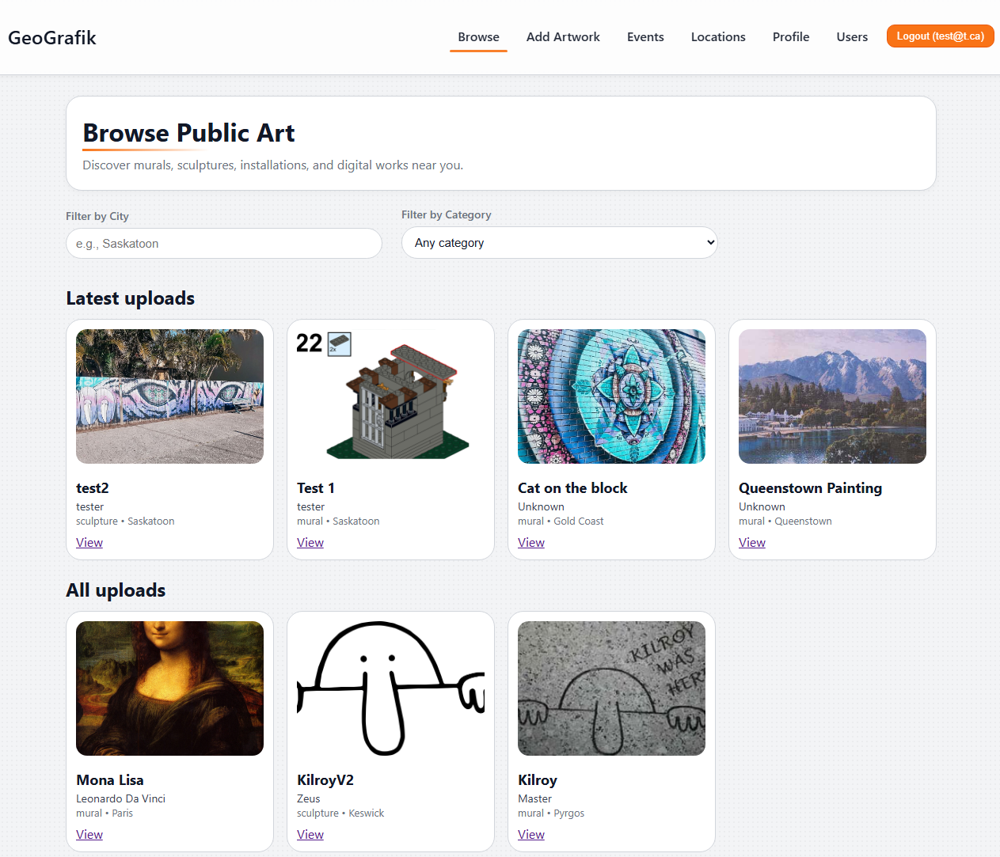
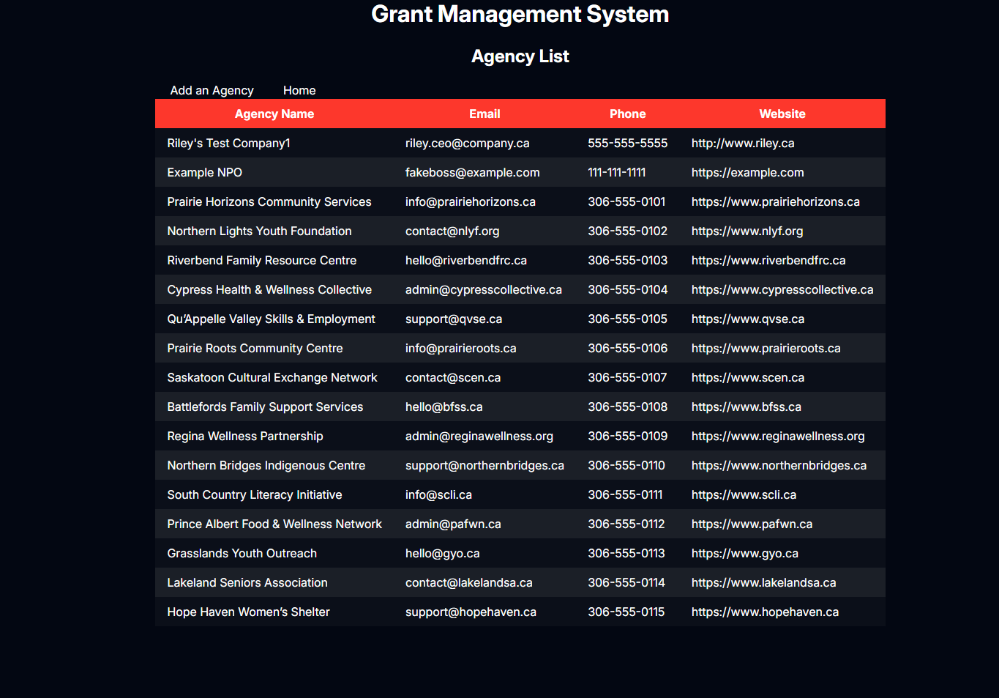
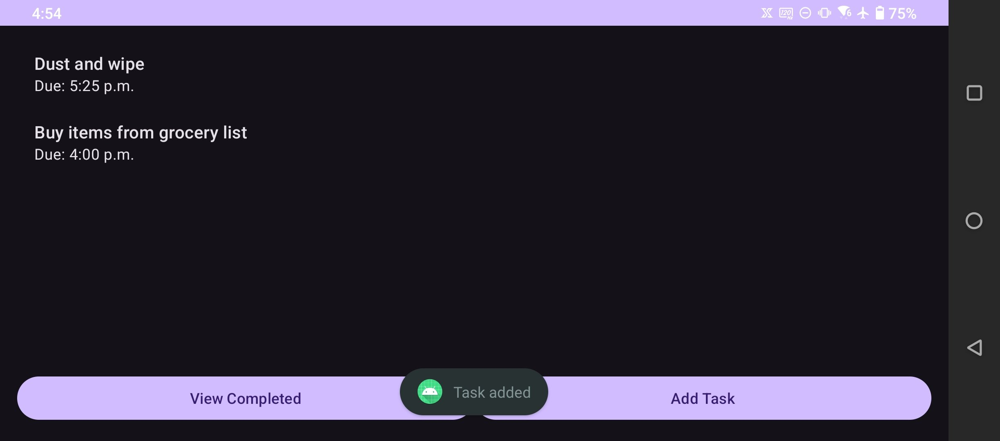

Projects
Selected projects that show my experience with full-stack web development, team collaboration, and Android app development.
GeoGrafik – Public Art Mapping Web App
Full-stack web app that maps public artwork and events by location.
GeoGrafik is a React-based web application that lets users explore public artwork on an interactive map. Artworks can be browsed by city, location, or event, and each entries includes details such as title, artist, category, and description. Locations are stored in a database and linked to artworks and events.
This project was developed collaboratively with my partner, Riley, and we shared responsibilities in UI design, data modeling, and API integration.
- Built the front-end using React and TypeScript.
- Designed entities such as User, Artwork, Location, and Event with proper relationships.
- Worked with REST APIs and database queries to fetch and update records.
- Focused on clean UI, clear navigation, and responsive layout.
Grant Application System (Team Project)
Full-stack system with a React + TypeScript front-end and FastAPI (Python) back-end for managing agencies, applicants, and grant agreements.
In this team project, we built a grant management system where staff can create and manage agency records, applicant profiles, and grant agreements. The front-end is a single-page application built with React and TypeScript, and it communicates with a FastAPI back-end written in Python.
Our team used Bitbucket for version control, branches, and pull requests so we could review each other's work and keep the main branch stable.
- Built React + TypeScript pages and forms for agencies, applicants, and grants.
- Integrated the UI with FastAPI endpoints to load, create, and update data.
- Implemented client-side and server-side validation to protect data integrity.
- Debugged update/delete flows to avoid accidentally breaking related records.
- Collaborated with teammates using Bitbucket, code reviews, and shared task ownership.
TaskTracker – Android App
A simple mobile app for anyone who wants to track tasks with reminders, photos, and location logging.
TaskTracker is an Android application designed for anyone who wants an easy and organized way to manage personal tasks. Users can add tasks, receive scheduled reminders, attach a photo when a task is completed, and optionally capture the location of completion. The goal of this app is to make everyday task management convenient and intuitive.
- Stores all tasks locally using SQLite.
- Uses AlarmManager and BroadcastReceiver for reminder notifications.
- Allows users to attach a completion photo using the Android camera API.
- Captures optional GPS location via LocationManager.
- Designed for general users, such as students, workers, or anyone wanting better task organization.